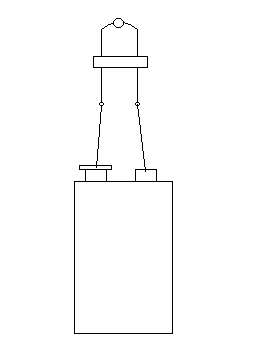
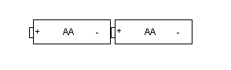
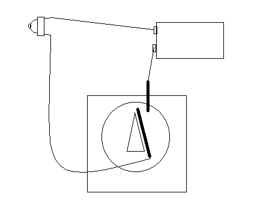
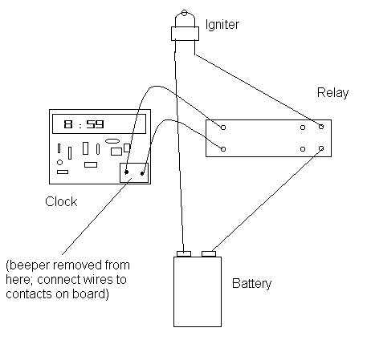

|
No boom today. Boom tomorrow. Today we're going to take a closer look at igniters, timers, and some of my other past articles; albeit in a fairly general fashion. DF has forwarded some comments and questions to me. I'm answering them through this article because I don't particularly wish to open up regular correspondence with a lot of strangers in these days of increased FBI snooping and the Homeland Stasi Agency. Igniters One individual wondered how to use model rocket motor igniters (and I assume the improvised sort). This worries me a little. Possibly this person shouldn't be reading my stuff without adult supervision; gadgets don't come much simpler than igniters. An igniter is used to set fire to something. In a model rocket, it fires - "ignites", hence the name - the solid fuel in the rocket, just like the fuse in a bottle rocket. In my applications, it can also be used to light a fuse for a short delay, touch off a propane/air explosive mixture in a pop bottle for a ground burst simulator, or a primary incendiary to trigger thermite. For other applications of your devising.... wait for it... Be creative. But how do the things work? An igniter is a piece of wire coated with a flammable mixture. To fire an igniter, simply connect each end of the wire to a battery terminal. The wire gets hot as electrical current flows. The flammable mixture catches fire from the heat. Whatever incendiary compound the igniter is in contact with should ignite in turn. It's that simple.
 If you bought commercial igniters in a pack of rocket motors, RTFM*. The safety instructions should have given you a pretty good clue how to make an igniter work. Depending on your igniter, a single AA battery may be enough to set it off. Or you may need more batteries hooked up in series (i.e. - positive terminal of one battery connected to negative terminal of the next, and so on).
 For the sake of reliability, I suggest that you use a single 9V radio battery. WARNING: This is a simplified explanation. If you are using the igniter to trigger thermite, an explosive device, or other hazardous gadget, connect the igniter to the battery with LONG wires, lest you inadvertently raise the world's average IQ. An on/off switch wired between the igniter and battery is also a really good idea. If you let any bare wires (such as either lead of the igniter) touch, the electricity will be shorted out and the igniter will not fire. If anyone is still unclear on how to use an igniter, please refrain from doing so, and stick to playing with sparklers under adult supervision. Using Igniters with Timers I'll allow that this is a better question than the first. In a basic configuration, you've wired your igniter to a battery via a switch so you can set off your toy at a time of your choosing. The advantage of a timer - to replace the manually operated switch - should be obvious: You don't have to hang around in order for exciting things to happen, which might tend to frighten gov-thugs into hasty actions. A simple mechanical timer, such as a kitchen egg timer can handle many jobs. To do this, connect a wire to the timer pointer. That wire should connect to one side of the igniter. Install a second wire on the frame of the timer so that the pointer wire can contact it when the pointer has rotated around after a time delay. This can also work with any old fashioned analog clock with hands instead of a digital display.
 Digital clocks are much different. After all, you won't have any hands to wire up. As all clocks are different, take this with a grain of salt and use a little sense.
To accomplish the latter, do this with a battery powered clock. Odds are you don't want your timer tethered to your house with an extension cord anyway. You need to get the case off of your clock without destroying it. Look for screws, or good places to carefully pry it open. WARNING: Doing this with a plug-in-the-wall AC powered clock can expose you to potentially lethal voltages. Use some sense, or put this article away and go read a comic book. Once the clock case is off, set the alarm to go off in a short period of time. This is so that you can hear the alarm and find the piece in the clock that makes the noise. More than likely, you'll be looking for small white plastic or silvery metallic cylinder which looks vaguely like a miniature speaker. When you've found it, remove it and note the location. Pull the battery out of the clock. Ideally, you'd remove that alarm beeper by desoldering it from the circuit board (look; I advised you to learn to solder). You may be able to pry it up enough to clip the tiny electrical connections holding it to the circuit board. It isn't important to avoid damaging the little beeper, but you want intact connections left on the circuit board. Once all that's done, solder a wire to each of the contacts left on the circuit board. In turn, connect the other end of those wires to a latching relay. The speaker output of your clock won't be enough to fire an igniter, but it can (probably; depends on your clock, and is beyond my control) operate an external relay that can carry enough power to work the igniter. This is not the place for a basic electronics tutorial. A relay is simply a remote control switch. In this case, it's remotely controlled by the clock. Just buy a latching relay. Go to a decent electronics hobby shop and tell the clerk what you want. It should be able to handle 1 amp or more of current. The relay should operate on the lowest voltage rating you can find. You may end up with a standard relay that you'll convert to latching mode by wiring the controlled output to the coils. Right now, don't worry about what that means; if if you need to do that, the relay should come with instructions. You want a relay whose contacts close when energized. Now connect one terminal of a 9V battery to the controlled input contact terminal of your relay. The output terminal should be connected to one lead of your igniter. The other igniter lead will be connected directly to the remaining battery terminal via a length of wire. You should end up with something like this:
 Test this by putting the battery back in the clock, setting the alarm, and waiting for the igniter to fire. Don't test this with the igniter connected to any hazardous device. Thermite I originally specified black iron oxide in my thermite recipe, as opposed to red iron oxide so familiar to folks with rusty yard tools. Various suggestions have come my way about using the red. Sorry, I stand by black. Red iron oxide doesn't work worth a damn. Black iron oxide does. If you've already obtained red, save it for propellant applications (I suppose I'll do an article one of these days) or for its nuisance value. The iron produced by the typical improvised thermite reaction is fairly low-grade; don't bother trying to use it to make direct castings for guns. Paper guns Don't leave fingerprints or address labels on your materials. PVC pipe of appropriate dimensions can work; but I find it's often brittle and should be covered with duct or strapping tape. Doing Freedom is an electronically published/distributed magazine. Not only is a paper edition not sent, I can't send - over the cables and radio waves of the Internet - the physical materials for the projects I describe in these articles. Maybe someday I'll make a few kits available for physical shipping. Pepper (OC) Spray Yes, the Scoville (heat units) rating of the pepper used in the spray matters indirectly. But the Scoville rating only addresses the relative "spiciness" of equal quantities of different kinds of pepper. Which basically means, "How much OC is in each pepper?" That is, what's the percentage of OC? I stand by my use of OC percentages when picking your spray. Yes, there are different types of OC dispersion. Stream is virtually useless in most tactical applications. This is my professional opinion, backed up by experience. Spray is the most generally useful when used by and against individuals. I recommend it for your Burglar Deterrent and for personal defense carry. Fog is generally used against crowds, riots. You could use it for your burglar trap, but it's going to nail you, too. Foam is used for crowds and individuals. Avoid it in this house-protecting case; it's a bitch to clean up. My critic missed a fifth dispersal system, possibly because it's now pretty much unavailable to anyone but cops and military: Blast. Fun stuff; this is the seldom seen explosive pepper grenade, used against rioters. It spreads a lot of pepper over a fairly large area fast. If you're of a mind to try one of these things, stick a ground burst simulator or flash/bang in a small cardboard box or tube and fill the box/tube with cayenne pepper. When you set off the GBS, the pepper will be dispersed explosively. I'd bet that IRS agents hate this. There are also specialized shotgun rounds which contain pepper instead of shot. You can probably think of all sorts of fun things to do with these. I don't count the use use cotton swabs as a valid tactical dispersal system. It's torture. If a cop has adequate control of a person to allow him to safely stick a cotton swab in that person's eyes, the OC was unnecessary. Again, that's straight-forward torture, and should garner the reward due to any torturer. If you have additional questions, comments, or suggestions, please send them to DF's editor. As I let them know how to contact me, I'm sure they'll forward them on. I also try to look in on the comments forms occasionally. Have fun!
* - "Read The Effing Manual"
Did you like this article?
|